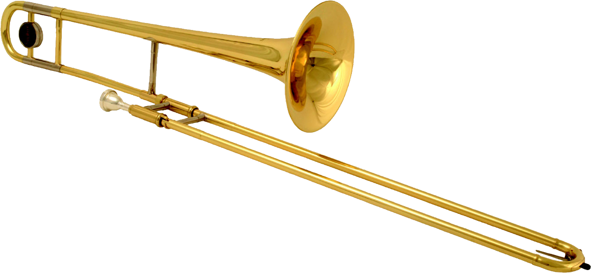

Na Idade da Pedra Lascada (quando o homem produzia objetos com pedra e madeira), surgiram os primeiros chocalhos e apitos, feitos com materiais retirados da natureza. Ossos, por exemplo, serviam como flautas e apitos. Os tambores também são muito antigos. Eram produzidos com bambu e pele de animais há 10 mil anos
Com o tempo, os instrumentos tornaram-se mais complexos de construir e tocar. Por exemplo, o cravo surgiu no século XIV e é considerado o ancestral do piano (cerca de 400 anos depois). No século passado, surgiram as guitarras elétricas, como as guitarras..
Existem várias formas de classificar os instrumentos musicais. Em geral, são ordenados de acordo com o material de que são feitos e o modo como o som é produzido. No entanto, a maioria dos especialistas prefere classificá-los em três grandes famílias: os de corda, sopro e percussão.
Instrumentos de cordas são instrumentos musicais cuja fonte primária de som é a vibração de uma corda tensionada quando beliscada, percutida ou friccionada.


Sabe por que os instrumentos de sopro têm esse nome? Justamente porque pra tocar, além de usar as mãos, você precisa soprar neles com a boca.


Os instrumentos de percussão são aqueles que necessitam ser percutidos (batidos), agitados, raspados ou friccionados para que produzam os sons.